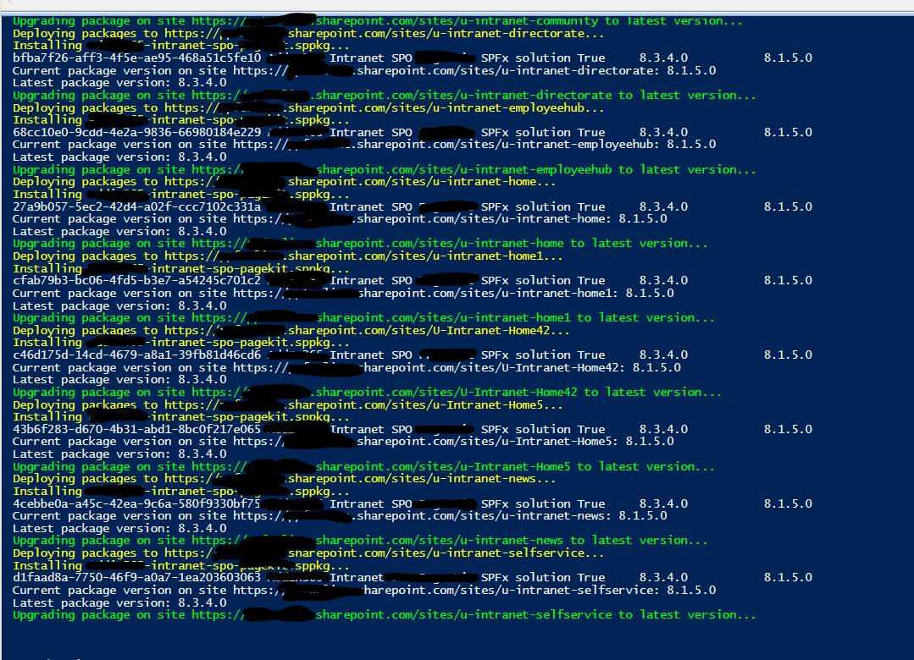

Deploys and Installs SharePoint Framework (SPFx) solutions to Hub Site and Associated Sites using Site Collection App Catalog
Summary
At the time of submitting this script sample there is no concept of a hub site app catalog. However you may want to install or upgrade a SPFx solution to all sites within a hub for example all sites linked to the intranet hub. This sample is applicable for a SPFx solution that needs to be deployed and upgraded across all sites in a hub using Site Collection App Catalog.

Prerequisites
- The user account that runs the script must have SharePoint Online tenant administrator access.
- Before running the script, edit the script and update the variable values in the Config Variables section, such as Admin Center URL, Hub Site URL, the CSV output file path and alternatively the sppkg packages Folder.
The script will:
- Get the hub site ID using the Get-PnPHubSite cmdlet.
- Get all associated site collections in the tenant using the Get-PnPTenantSite cmdlet filtered by the HubSiteId property.
- Connect to the site using Connect-PnPOnline.
- Check if the site collection app catalog exists. If it doesn’t, create it using Add-PnPSiteCollectionAppCatalog.
- Deploy the SPFx package using Add-PnPApp.
- Check if the package is already installed on the site using Get-PnPApp.
- If the package is not installed, install it using Install-PnPApp.
- If a newer version of the package is available, update the package using Update-PnPApp.
- Export the site collection URL, package name, and package version to a CSV file for a record of what's updated.
The script does not cover admin consent to app permissions. A global administrator will have to grant admin consent if required by the SPFx solutions.
#Config variables
$adminCenterURL = "https://tenant-admin.sharepoint.com"
$fileName = "\IntranetUpgradeSPFx-" + $dateTime + ".csv"
$hubSiteUrl = "https://tenant.sharepoint.com/sites/u-intranet"
$OutPutView = $directorypath + $fileName
$sppkgFolder = "./packages"
$dateTime = (Get-Date).toString("dd-MM-yyyy")
$invocation = (Get-Variable MyInvocation).Value
$directorypath = Split-Path $invocation.MyCommand.Path
cd $PSScriptRoot
$packageFiles = Get-ChildItem $sppkgFolder
Connect-PnPOnline $adminCenterURL -Interactive
#collection to save the list of sites where the deployment or upgrades of SPFx solution happened for auditing
$ViewCollection = @()
$HubSite = Get-PnPHubSite -Identity $hubSiteUrl
$associatedSites = Get-PnPTenantSite -Detailed | Where-Object {$_.HubSiteId -eq $hubSite.Id}
#Get all site collections associated with the hub site
$associatedSites | select url | ForEach-Object {
$Site = Get-PnPTenantSite $_.url
If($Site.HubSiteId -eq $HubSiteId){
Connect-PnPOnline -Url $Site.url -Interactive
Write-Host ("Deploying packages to {0}..." -f $Site.url) -ForegroundColor Yellow
foreach($package in $packageFiles){
$ExportVw = New-Object PSObject
$ExportVw | Add-Member -MemberType NoteProperty -name "Site URL" -value $Site.url
$packageName = $package.PSChildName
Write-Host ("Installing {0}..." -f $packageName) -ForegroundColor Yellow
$ExportVw | Add-Member -MemberType NoteProperty -name "Package Name" -value $packageName
#ensure app catalog
if(!(Get-PnPSiteCollectionAppCatalog -CurrentSite)){
Write-Host ("Creating site collection app catalog in {0}..." -f $Site.url) -ForegroundColor Yellow
Add-PnPSiteCollectionAppCatalog
}
while(!(Get-PnPSiteCollectionAppCatalog -CurrentSite)){
Start-Sleep -Seconds 20
}
#deploy sppkg
Add-PnPApp -Path ("{0}/{1}" -f $sppkgFolder , $package.PSChildName) -Scope Site -Overwrite -Publish
Start-Sleep -Seconds 5
#Find Name of app from installed package
$RestMethodUrl = '/_api/web/lists/getbytitle(''Apps%20for%20SharePoint'')/items?$select=Title,LinkFilename'
$apps = (Invoke-PnPSPRestMethod -Url $RestMethodUrl -Method Get).Value
$appTitle = ($apps | where-object {$_.LinkFilename -eq $packageName} | select Title).Title
# Get the current version of the SPFx package
$currentPackage = Get-PnPApp -Identity $appTitle -Scope Site
Write-Host "Current package version on site $($site.Url): $($currentPackage.InstalledVersion)"
#Install App to the Site if not already installed
$web = Get-PnPWeb -Includes AppTiles
$app = $web.AppTiles | where-object {$_.Title -eq $currentPackage.Title }
if(!$app){
Install-PnPApp -Identity $currentPackage.Id -Scope Site
Start-Sleep -Seconds 5
}
# Get the latest version of the SPFx package
Write-Host "Latest package version: $($currentPackage.AppCatalogVersion)"
# Update the package to the latest version
if ($currentPackage.InstalledVersion -ne $currentPackage.AppCatalogVersion) {
Write-Host "Upgrading package on site $($site.Url) to latest version..." -ForegroundColor Green
Update-PnPApp -Identity $currentPackage.Id -Scope site
$currentPackage = Get-PnPApp -Identity $appTitle -Scope Site
$ExportVw | Add-Member -MemberType NoteProperty -name "Package Version" -value $currentPackage.AppCatalogVersion
$ViewCollection += $ExportVw
} else {
Write-Host "Package already up-to-date on site $($site.Url)."
}
}
}
}
#Export the result Array to CSV file
$ViewCollection | Export-CSV $OutPutView -Force -NoTypeInformation
Disconnect-PnPOnline
Note
SharePoint admin rights are required to run the script
Check out the PnP PowerShell to learn more at: https://aka.ms/pnp/powershell
Important changes coming to the way you login into PnP PowerShell (effective 9th September 2024) see Changes in PnP Management Shell registration in Microsoft 365
Source Credit
Sample first appeared on Deploying and Installing SharePoint Framework (SPFx) solutions using PnP PowerShell to Hub Site and Associated Sites
Contributors
| Author(s) |
|---|
| Reshmee Auckloo |
| Ganesh Sanap |
Disclaimer
THESE SAMPLES ARE PROVIDED AS IS WITHOUT WARRANTY OF ANY KIND, EITHER EXPRESS OR IMPLIED, INCLUDING ANY IMPLIED WARRANTIES OF FITNESS FOR A PARTICULAR PURPOSE, MERCHANTABILITY, OR NON-INFRINGEMENT.